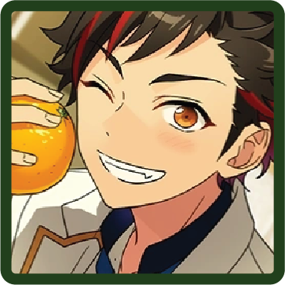

♪ fighting or sewing, i'll handle both
MORE INFORMATION
BIO
Birthday

Sep. 6th
Hobby
Reading
Specialty
Shamisen
Idol Color
#316745
Likes
Glasses
Dislikes
Soybeans
UNITS
AKATSUKI
Keito Hasumi

Kuro Kiryu

Souma Kanzaki

DEADMANZ (Temporary)
A temporary unit that Rei Sakuma, Koga Oogami, Keito Hasumi and Kuro Kiryu were part of before the creation of AKATSUKI and UNDEAD.
Rei Sakuma

Keito Hasumi
Koga Oogami

Kuro Kiryu
Knights Killers (Temporary)
A temporary unit created to oppose Knights Killers in the event Diner Live, formed by Wataru.
Leo Tsukinaga

Eichi Tenshouin

Kuro Kiryu
Nazuna Nito

Butoukai (Shuffle Unit)
This shuffle unit was formed. The group center is Kuro Kiryu, and both Madara and Kuro lead it.
Kuro Kiryu
Madara Mikejima

Tetora Nagumo
Jun Sazanami

Adonis Otogari

CLUBS (!-Era)
Karate Club
Kuro Kiryu
Tetora Nagumo
CIRCLES (!!-Era)
Overnight Outdoors Party
A leisure-based circle of those who enjoy being out in nature, such as by camping for a night or two. They open their arms to any guest who wants to join them, and also hold one-day hiking trips.
Kuro Kiryu
Leo Tsukinaga
Niki Shiina
Mitsuru Tenma
Mayoi Ayase

RELEVANT STORIES
Flower Festival

SCOUT STORIES
Fresh Green Martial Artist